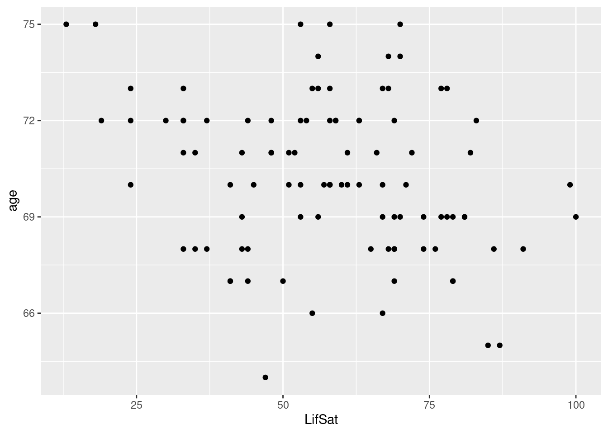
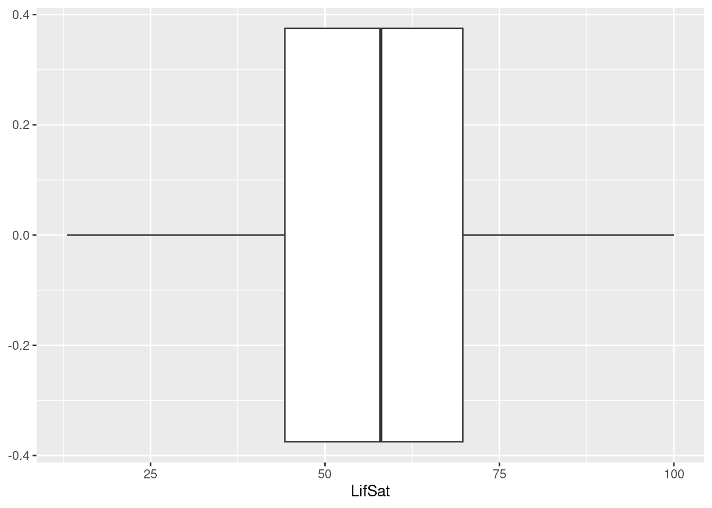

0.9 Plotting data
It is almost always a good idea to visualize your data before you dive into a full statistical analysis. For example, you may like to know something about the nature of the relationship between two specific variables, the distribution of some set of values, etc.
- In this section, we will create three basic plots of our data.
- When we create these plots, the figures will appear in the plots tab in the lower right quadrant of the RStudio window.
0.9.1 R packages and ggplot2
We will use the ggplot2 package for plotting. This package is not part of the
Base R installation. So, you must install ggplot2 yourself (you should have
already done so in Section 0.2.3).
- You only need to install an R package once.
- R packages are just small software programs, so they must be installed just like any other piece of software.
- After installing, the package is accessible on your computer but not yet
available for use in your current R session.
- You must first load the package.
- You need to load the package every time you want to use it in a new R session.
- After loading, the package contents (i.e., functions, help files, datasets) are initialized in memory and ready to use in your current R session.
- Loading a package is more-or-less equivalent to ‘opening’ a software program by clicking on its desktop icon.
Run the following code to load the ggplot2 package.
library(ggplot2)0.9.2 Histogram
We can use a histogram to visualize how the values of a continuous variable are distributed.
## Use the 'LifeSat' data to create the plot
## Use the 'LifeSat$LifSat' variable to define the X-axis
ggplot(data = LifeSat, aes(x = LifSat)) +
geom_histogram() # Create a histogram from the data/variable defined above
0.9.3 Boxplot
A boxplot provides another useful visualization of a continuous variable’s distribution. We can also use boxplots to detect outliers.
## Same data/variable setup as above:
ggplot(data = LifeSat, aes(x = LifSat)) +
geom_boxplot() # Create a boxplot
0.9.4 Scatterplot
A scatterplot provides a visual representation of the relationship between two variables.
- Since we are now plotting two variables, we need to define a
yvariable in addition to thexvariable specified in the previous examples.
## Add the 'age' variable on the Y-axis:
ggplot(data = LifeSat, aes(x = LifSat, y = age)) +
geom_point() # Create a scatterplot